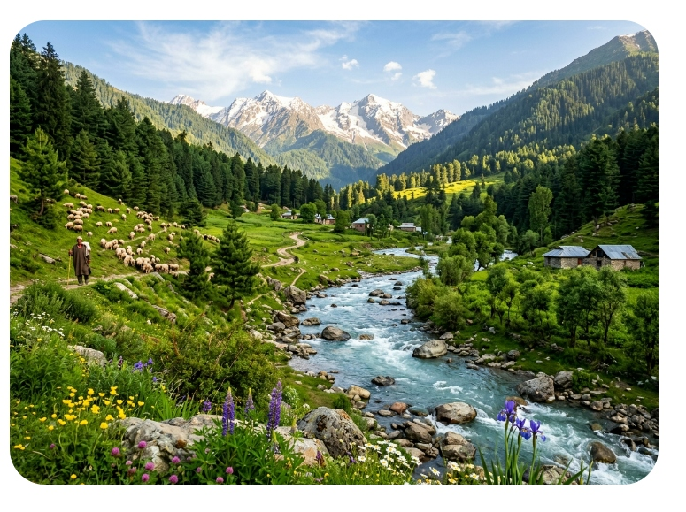
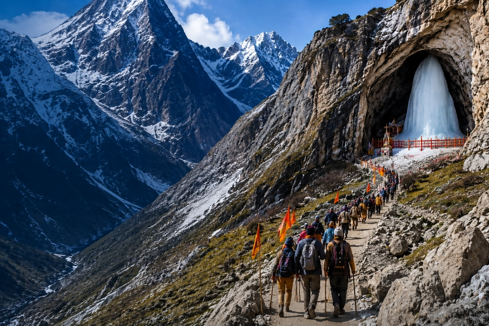
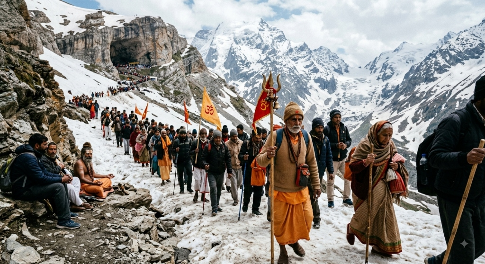

Photo Gallery
Amarnath Yatra — Journey in Images





3 Nights · 4 Days · Pahalgam or Baltal Route · Helicopter Option Available
The Amarnath Yatra is one of Hinduism's most revered pilgrimages — a journey to the holy cave shrine of Lord Shiva at 3,888 m in the Himalayan ranges of Jammu & Kashmir. Inside the cave, a naturally formed ice Shivalingam waxes and wanes with the moon cycle, believed to represent Lord Shiva's immortality.
Our 3 Nights 4 Days Amarnath Yatra package is planned for both first-time pilgrims and experienced trekkers. Choose the traditional Pahalgam route through lush valleys, or the shorter Baltal route. Helicopter transfers available for comfortable aerial access to Panjtarni. All yatra permits, medical certificate assistance, pony/palki arrangements, and dedicated local support included.


"Doing the Amarnath Yatra with Travel with Anu was the most spiritually fulfilling experience of my life. The helicopter package was perfect — 8 minutes flying over glaciers then sacred darshan. Every permit was handled flawlessly. Jai Baba Barfani!"
"I am 68 years old and did the Yatra via helicopter with the VIP package. Travel with Anu arranged the palki for the 6 km from Panjtarni to the cave. I never felt unsafe for a single moment. The darshan brought me to tears. Truly life-changing."
"Came from Hyderabad with my family of 5. Travel with Anu handled the entire Amarnath Yatra — permits, base camp, helicopter, Srinagar sightseeing and all meals. The Shikara ride on Dal Lake after Yatra was beautiful. Highly recommended!"
Book your Amarnath Yatra Package 2026 now — permits, helicopter, accommodation and full support handled by Kashmir's most trusted native travel experts.